The Desert
Dune skitter · Cistern beast · Possessed cistern pump · Dune wanderer shade

Use the four main figures from left to right; incidental marks are not design requirements. Midjourney original
Other generated studies


25 worlds · 100 enemy types · Moebius science fiction
Each world has two local creatures, one old machine poisoned by a bad spirit, and one dark humanoid spirit. These concepts now have articulated procedural interpretations in the game. Inspect the enemies and try their attacks.
Dune skitter · Cistern beast · Possessed cistern pump · Dune wanderer shade
Use the four main figures from left to right; incidental marks are not design requirements. Midjourney original
Ridge runner · Storm ray · Possessed aerie sentinel · Feather-cowled shade
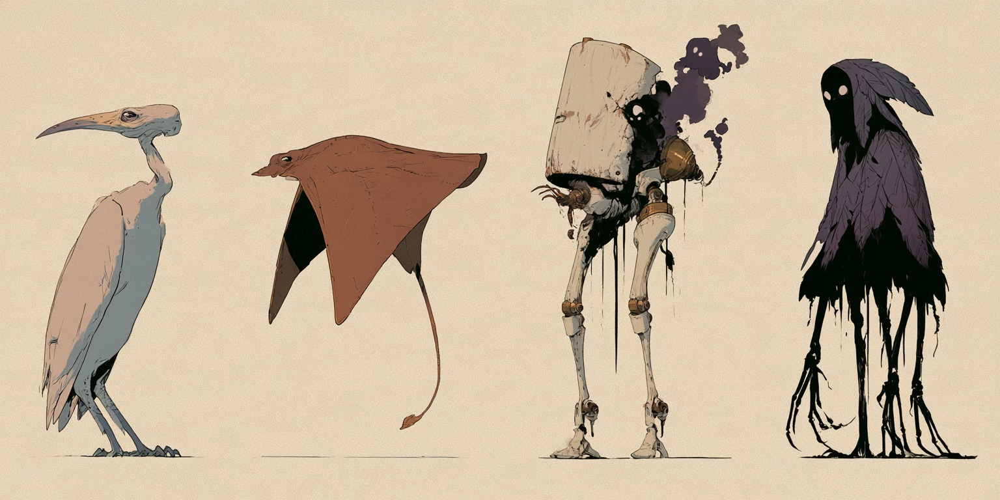
Use the four main figures from left to right; incidental marks are not design requirements. Midjourney original
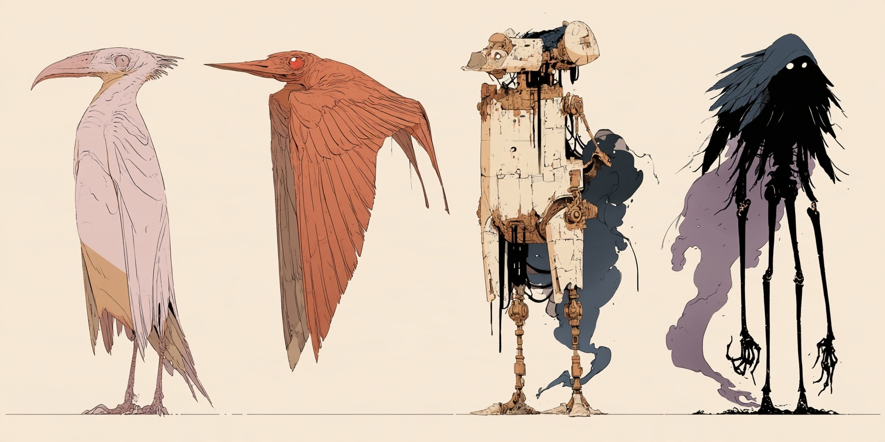
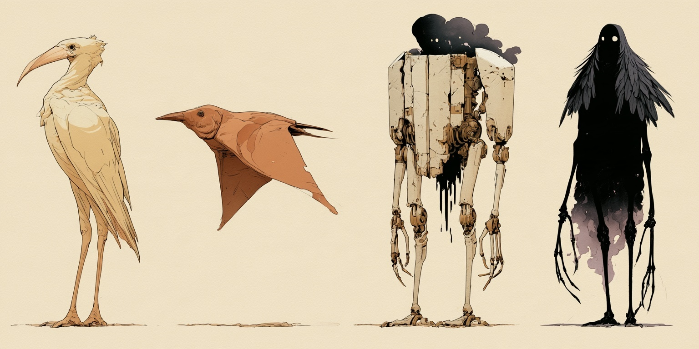
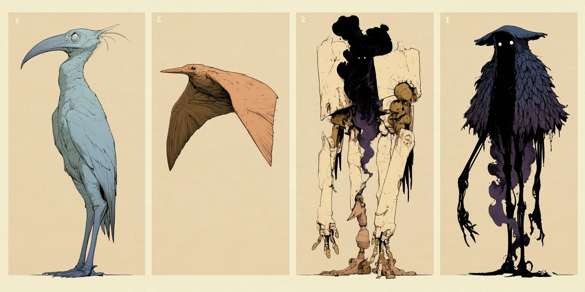
Cliff crab · Cloud spitter · Possessed monastery bell · Cloud monk shade

Use the four main figures from left to right; incidental marks are not design requirements. Midjourney original


Marsh snapper · Spore toad · Possessed marsh harvester · Shell-masked shade
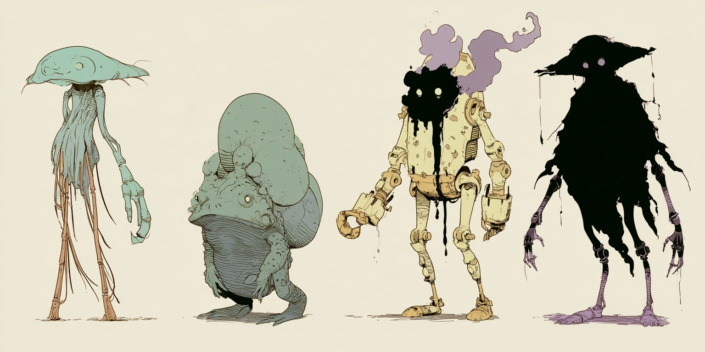
Use the four main figures from left to right; incidental marks are not design requirements. Midjourney original
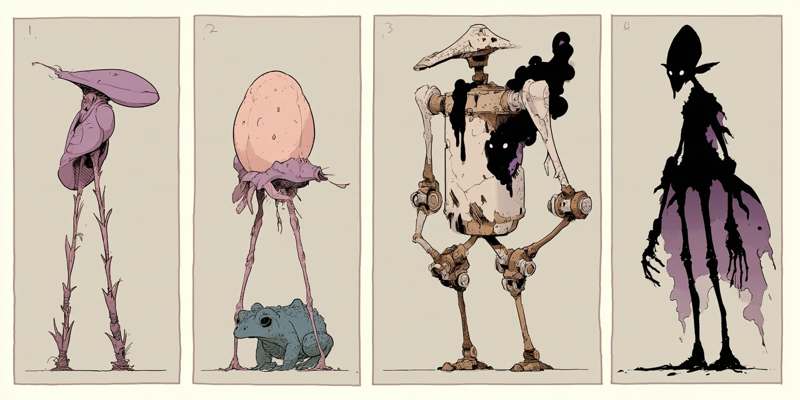
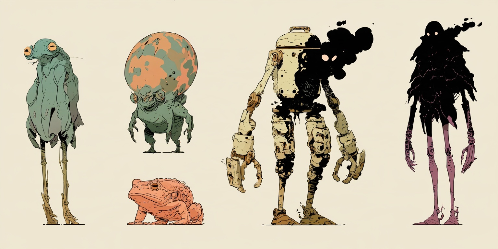
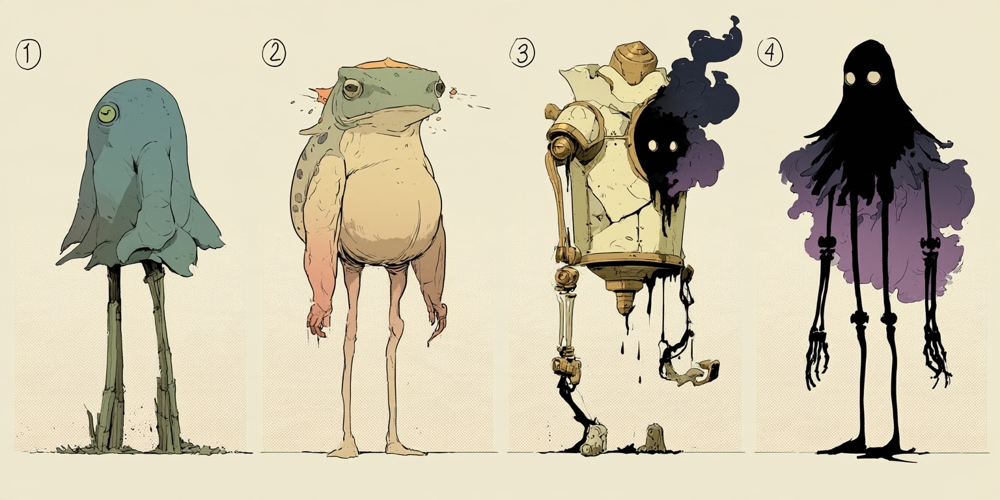
Root crawler · Fungal spitter · Possessed wood cutter · Hollow woodsman shade

Use the four main figures from left to right; incidental marks are not design requirements. Midjourney original


Seedpod artillery · Glass wasp · Possessed pruning machine · Garden keeper shade
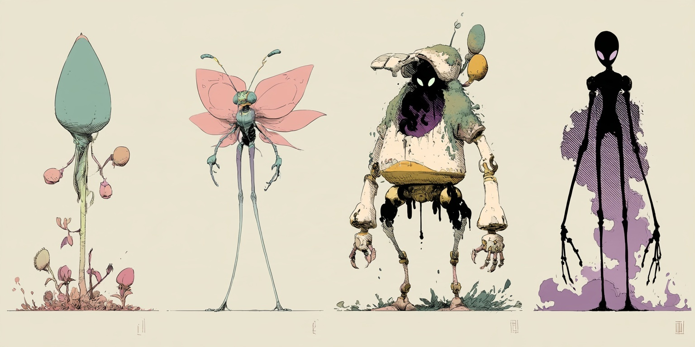
Use the four main figures from left to right; incidental marks are not design requirements. Midjourney original
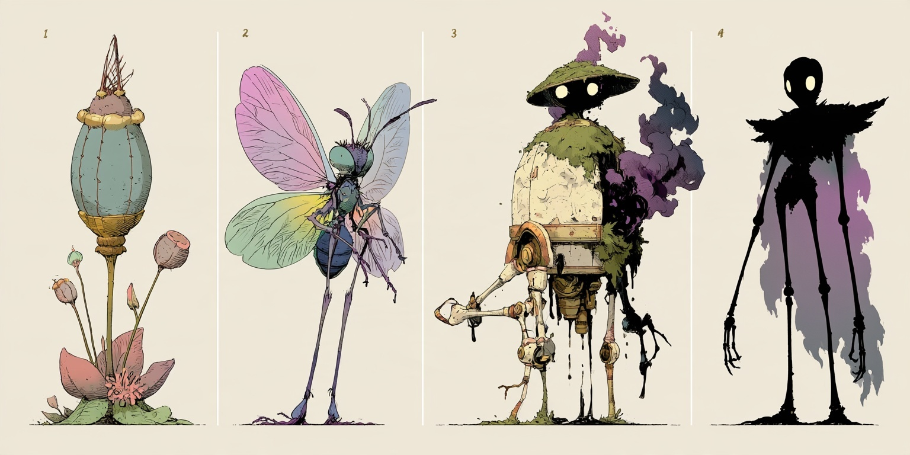
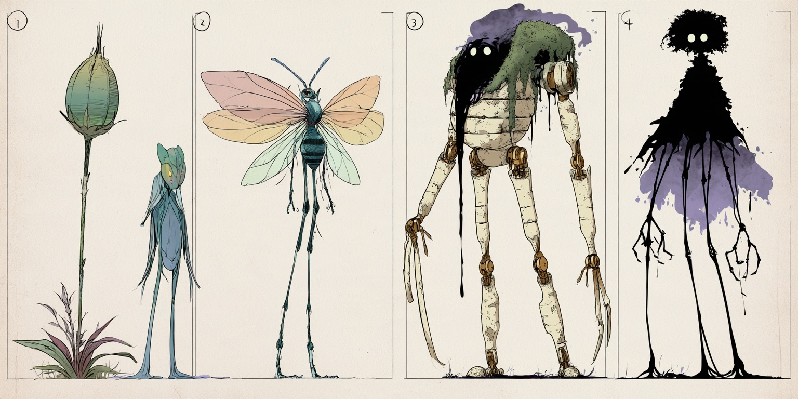
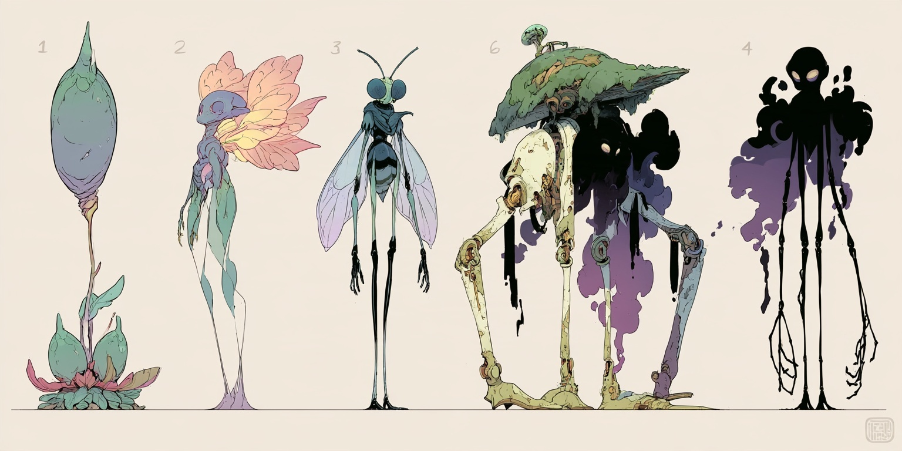
Pipe lizard · Pressure toad · Possessed inspection tripod · City vagrant shade

Use the four main figures from left to right; incidental marks are not design requirements. Midjourney original


Oil beetle · Scrap ray · Possessed welding automaton · Hooded mechanic shade

Use the four main figures from left to right; incidental marks are not design requirements. Midjourney original


Drill grub · Ash lizard · Possessed mining tripod · Pressure-suited shade

Use the four main figures from left to right; incidental marks are not design requirements. Midjourney original


Pearl rolling hunter · Prism spitter · Possessed ring machine · Halo garden shade

Use the four main figures from left to right; incidental marks are not design requirements. Midjourney original


Stall crab · Coin lizard · Possessed sign automaton · Parcel-backed shade

Use the four main figures from left to right; incidental marks are not design requirements. Midjourney original


Root wader · Salt mollusk · Possessed surveyor · Driftwood shade

Use the four main figures from left to right; incidental marks are not design requirements. Midjourney original


Glass crab · Crystal manta · Possessed furnace walker · Mirrored nomad shade

The first column includes two crab studies of the same type; use the upper faceted crab. Midjourney original


Drain crawler · Pressure-jet toad · Possessed turbine guardian · Aqueduct keeper shade

Use the four main figures from left to right; incidental marks are not design requirements. Midjourney original


Anchor crab · Brine mollusk · Possessed dock winch · Drowned sailor shade

The first two columns contain alternate views; use the upper crab and upper brine mollusk. Midjourney original


Copper beetle · Signal moth · Possessed relay sentinel · Static wanderer shade

Use the four main figures from left to right; incidental marks are not design requirements. Midjourney original


Coral crawler · Porcelain ray · Possessed diving bell · Drowned diver shade

Use the four main figures from left to right; incidental marks are not design requirements. Midjourney original


Crescent crawler · Night lizard · Possessed observatory machine · Eclipse pilgrim shade

Use the four main figures from left to right; incidental marks are not design requirements. Midjourney original


Orbital crab · Solar ray · Possessed gyroscope drone · Orbital worker shade

Use the four main figures from left to right; incidental marks are not design requirements. Midjourney original


Furnace beetle · Ember lizard · Possessed crucible automaton · Foundry worker shade

Use the four main figures from left to right; incidental marks are not design requirements. Midjourney original


Bridge crawler · Abyss ray · Possessed cable crane · Suspended humanoid shade

Use the four main figures from left to right; incidental marks are not design requirements. Midjourney original


Magnetic mollusk · Space moth · Possessed airlock inspector · Void wanderer shade

Use the four main figures from left to right; incidental marks are not design requirements. Midjourney original


Luggage beetle · Lantern moth · Possessed luggage porter · Shadow conductor

Use the four main figures from left to right; incidental marks are not design requirements. Midjourney original


Seashell crawler · Bulb toad · Possessed watering automaton · Attic wanderer shade
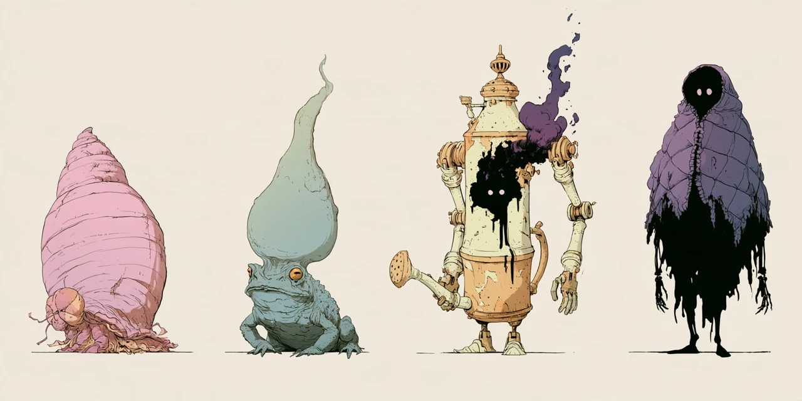
Use the four main figures from left to right; incidental marks are not design requirements. Midjourney original
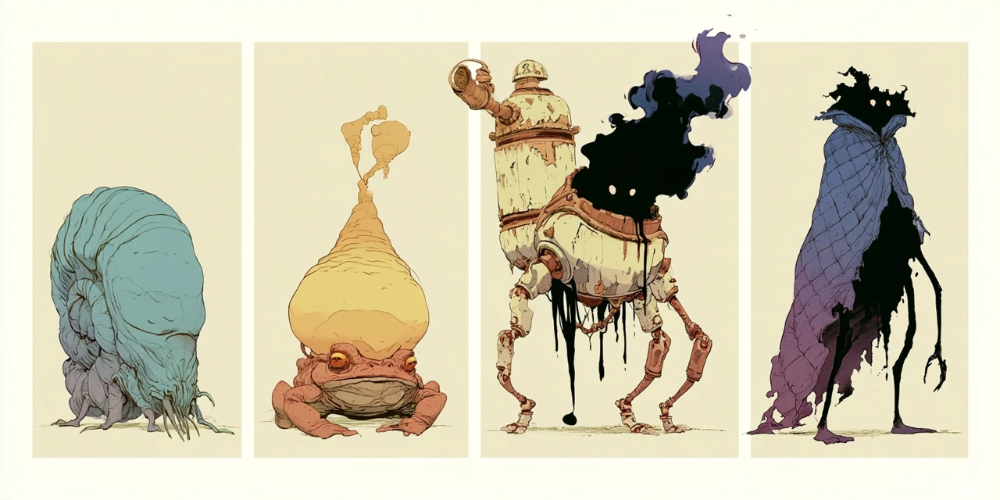
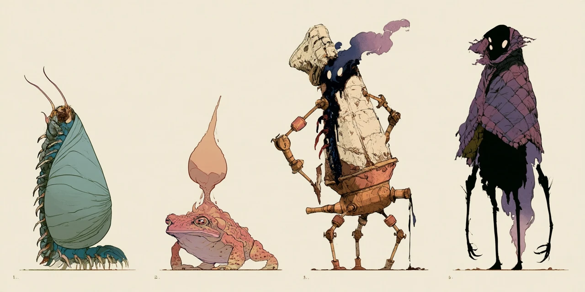
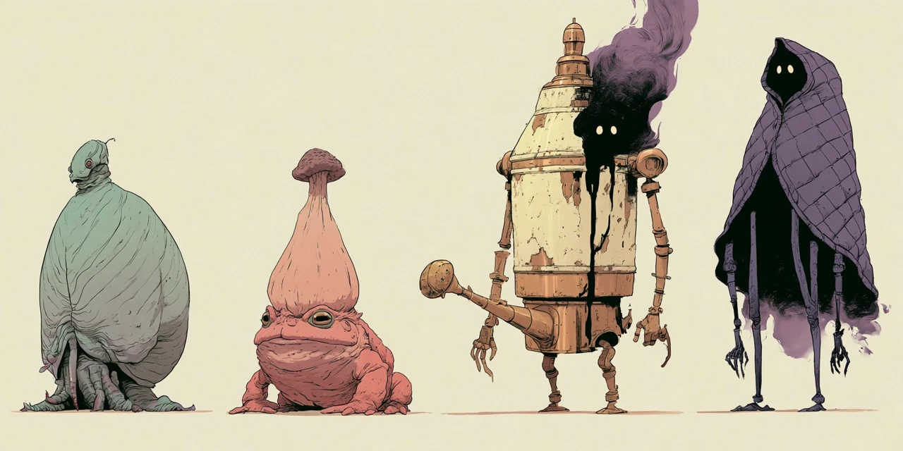
Paint beetle · Ink lizard · Possessed drawing machine · Paper mannequin shade

Use the four columns; disregard incidental marks and numbers. Midjourney original